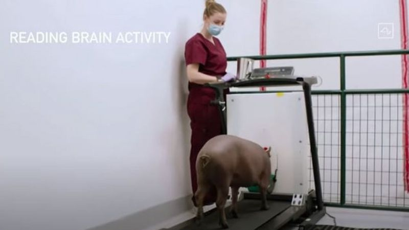

Reportero: Elisaac Najera
Chihuahua, Chihuahua
01 de Septiembre, 2020. 15:08
¿Te imaginas poder guardar tus recuerdos en una computadora, directamente desde tu cerebro, y volverlos a ver cuando quieras? ¿O incluso "descargarlos" en otro cuerpo? Ese es el futuro que se imagina el emprendedor multimillonario Elon Musk y que podría facilitar la tecnología que desarrolla su start-up de neurociencia, Neuralink. En el último avance difundido, la empresa aseguró que había hecho pruebas con un mono, que había sido capaz de controlar una computador con su cerebro.
En la presentación este viernes, Musk describió el sensor de Neuralink, de aproximadamente unos 8 milímetros de diámetro (más pequeño que la yema de un dedo), como un "Fitbit en tu cráneo con pequeños cables". El aparato desarrollado por la compañía consiste en una pequeña sonda que contiene más de 3.000 electrodos conectados a hilos flexibles y más finos que un pelo humano, que pueden monitorear la actividad de 1.000 neuronas cerebrales. "Neuralink tiene suficientes recursos y, lo más crucial, un equipo de científicos, ingenieros y médicos trabajando por un objetivo común, lo que aporta [al proyecto] grandes posibilidades de éxito", consideró en conversación con la BBC.
No obstante, añadió: "Incluso con estos recursos, el desarrollo de dispositivos médicos toma tiempo y la seguridad necesita ser una de las principales prioridades, por lo que sospecho que este proceso tomará más tiempo que el que se han establecido como objetivo". De hecho, en la presentación de este viernes, Musk pareció retractarse sobre los plazos de las pruebas con seres humanos, que anteriormente había dicho que comenzarían a realizarse este año.